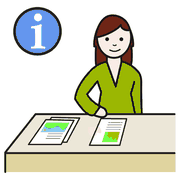
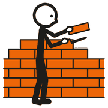
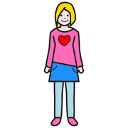
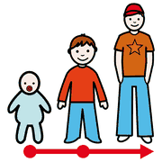
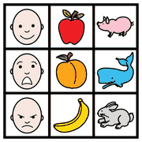
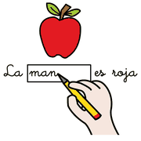

Modulo 13, risorse
Progettare un curricolo digitale
Come usare il quadro europeo DigComp 2.2 per costruire un percorso verticale di competenze digitali, dall'infanzia alla secondaria.
il quadro
di riferimento
Perché un curricolo digitale
 scuola
scuola computer
computer imparare
imparareUn curricolo digitale traduce il DigComp in traguardi, conoscenze e abilità per ogni età. Serve a far diventare le TIC parte stabile della progettazione, non un'attività occasionale affidata alla buona volontà del singolo docente.
Il DigComp 2.2 è il quadro europeo delle competenze digitali dei cittadini, pubblicato dal Joint Research Centre della Commissione europea nel 2022.
Le cinque aree del DigComp 2.2

informazione comunicare
comunicare
creare sicurezza
sicurezza- Alfabetizzazione su informazioni e datiCercare, valutare e gestire informazioni e contenuti.
- Comunicazione e collaborazioneInteragire, condividere, collaborare, netiquette, identità digitale.
- Creazione di contenuti digitaliCreare e rielaborare contenuti, diritto d'autore e licenze, programmazione.
- SicurezzaProteggere dispositivi, dati personali, salute, benessere e ambiente.
- Risolvere problemiProblemi tecnici, scelta degli strumenti, uso creativo, riconoscere i propri limiti digitali.
In tutto sono 21 competenze, descritte su otto livelli di padronanza. La traccia di lavoro le riporta una per una.
esempi,
non regole
Una progressione possibile
 bambino
bambino
ragazzo
crescere| Ordine | Che cosa si può puntare a fare |
|---|---|
| Infanzia | Conoscere i dispositivi e le prime regole d'uso; dare e seguire istruzioni con il coding unplugged e i robot da pavimento; rispettare turni e tempi. |
| Primaria | Scrivere e salvare un testo; fare ricerche guidate; collaborare su un documento condiviso; programmare a blocchi; riconoscere i dati personali da proteggere. |
| Secondaria | Valutare l'affidabilità delle fonti; produrre contenuti multimediali citando le fonti; gestire la propria identità digitale; usare l'IA in modo critico. |
È una proposta di lavoro: ogni scuola la adatta al proprio contesto, alle risorse e al PTOF.
lavoro
a gruppi
Attività per i corsisti
 gruppo
gruppo scrivere
scrivere pensare
pensare- Scegliete una fascia d'età e una competenza DigComp
- Trovate un'attività del laboratorio che la sviluppiMappe, storytelling, robotica, CAA…
- Adattatela per uno studente con disabilitàUsando i principi dell'UDL.
- Scrivete il traguardo e come lo osservereteUsate la tabella della traccia di lavoro.
La traccia di lavoro

tabellascrivere
compilareUna traccia per progettare un curricolo digitale: le 21 competenze del DigComp 2.2, una progressione per ordine di scuola, i collegamenti con i moduli del laboratorio e una tabella da compilare.
Apri la traccia Scarica in PDF